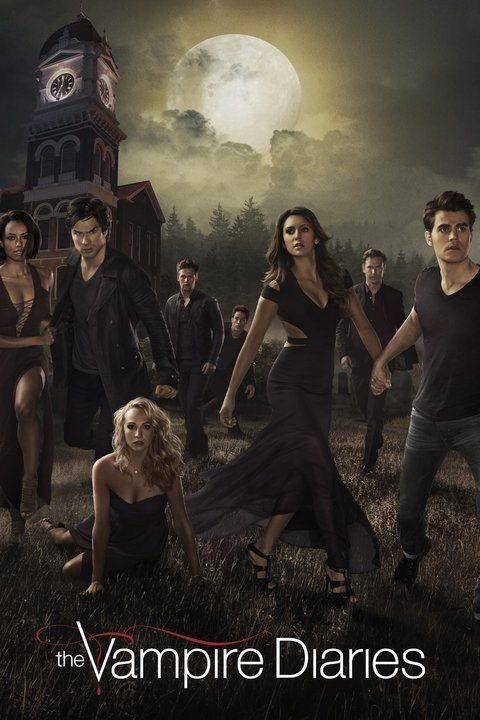
Desde que se tornaram vampiros, os irmãos Damon e Stefan Salvatore buscam
manter suas imortalidades em segredo, bem como a vontade de atacar humanos para se alimentar.Elesvivem na cidade
fictícia de Mystic Falls, na Virgina, um local frequentemente assombrado por criaturas sobrenaturais
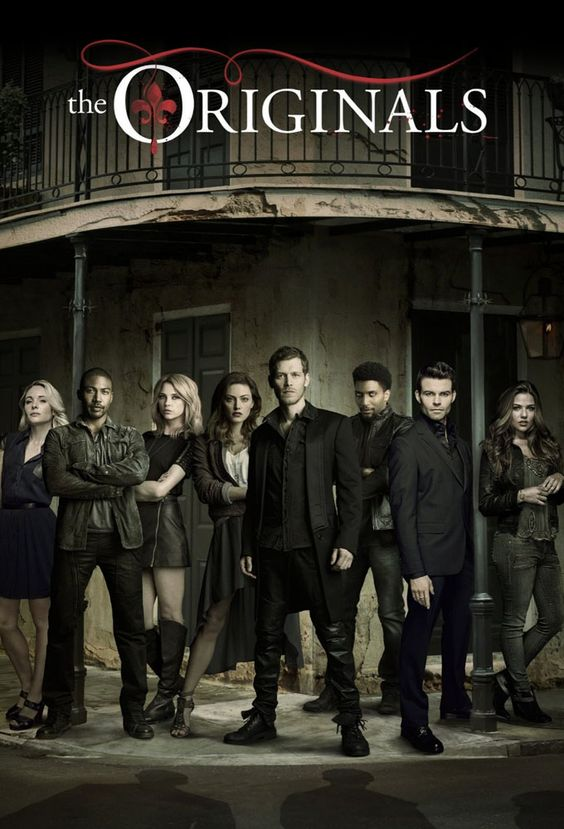
Tempo, tragédia e fome por poder têm separado a Família Original. Niklaus Mikaelson, o original híbrido de vampiro e
lobisomem, retornou à Nova Orleans,a cidade que sua família ajudou a construir, a cidade que ele e os irmãos – Elijah e Rebekah –
foram exilados séculos antes pelo pai caçador.
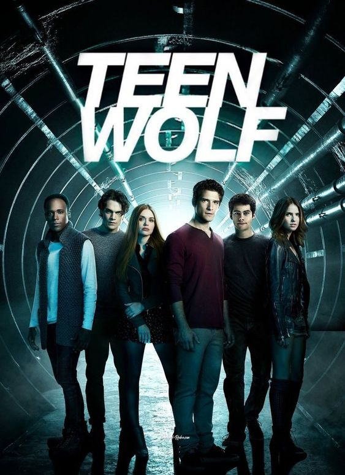
O jovem Scott McCall (Tyler Posey) é estudante do ensino médio no colégio fictício de Beacon Hills e vive como um garoto comum,
passando por problemas naturais da juventude. Ao ir caminhar na floresta em busca de um suposto corpo morto,
o menino é mordido por um lobisomem.

O mutante Geralt de Rívia é um caçador de monstros que luta para encontrar seu lugar num mundo onde as pessoas muitas vezes são
mais perversas que as criaturas selvagens..
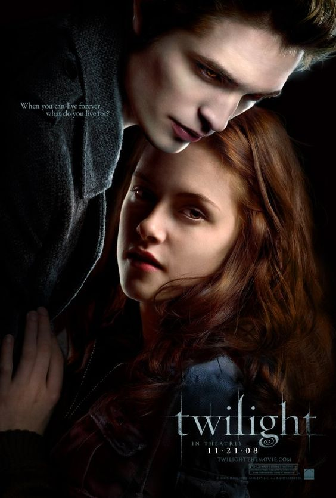
A estudante Bella Swan conhece Edward Cullen, um belo mas misterioso adolescente. Edward é um vampiro, cuja família não bebe sangue,
e Bella, longe de ficar assustada, se envolve em um romance perigoso com sua alma gêmea imortal.
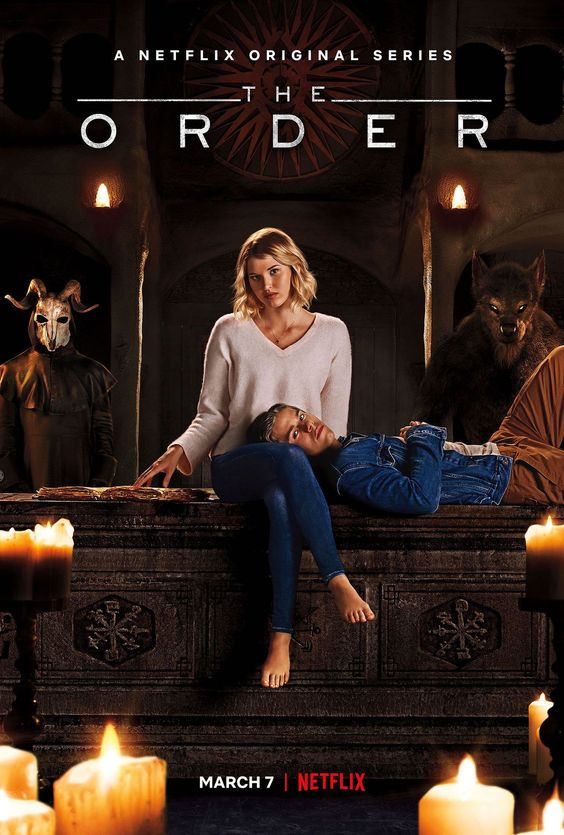
Para vingar a morte da mãe, um universitário entra para uma ordem secreta
e acaba no meio de uma guerra entre lobisomens e adeptos das artes das trevas.
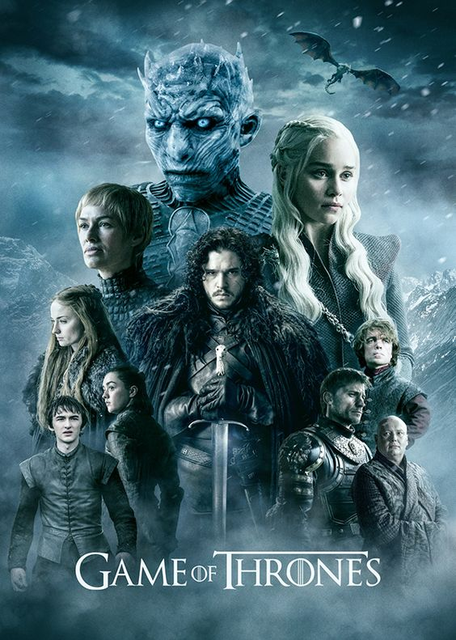
Game of Thrones conta a históra de um lugar onde uma força destruiu o equilíbrio das estações,
há muito tempo. Em uma terra onde os verões podem durar vários anos e o inverno toda uma vida, as reivindicações
e as forças sobrenaturais correm as portas do Reino dos Sete Reinos.
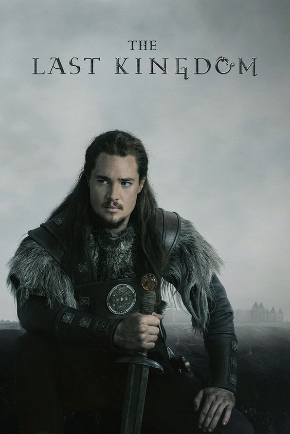
Adaptada da série de livros de Bernard Cornwell, “Crônicas Saxônicas”, The Last Kingdom é um drama histórico que se passa
no século IX e acompanha uma Inglaterra que caiu perante as invasões Vikings. Apenas o grande reino de Wessex continua a desafiar as probabilidades
e se mantém em pé, graças ao rei Alfred. No meio deste tempo turbulento vive Uhtred, filho de um nobre saxão que ficou órfão e foi criado pelos Vikings
como um dos seus. Forçado a escolher entre seu país de nascimento e as pessoas que o acolheram, sua lealdade é testada constantemente. Na jornada para
recuperar o seu direito de nascimento, Uhtred deve lidar com os dos dois lados da moeda para cumprir seu papel no nascimento de uma nova nação.
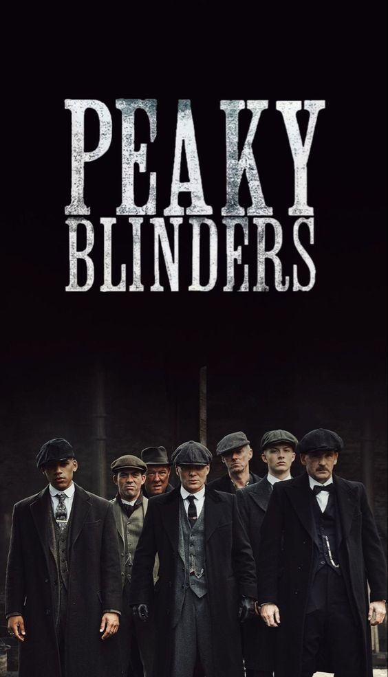
Uma notória gangue da Inglaterra de 1919 é liderada pelo cruel Tommy Shelby,
um criminoso disposto a subir na vida a qualquer preço.
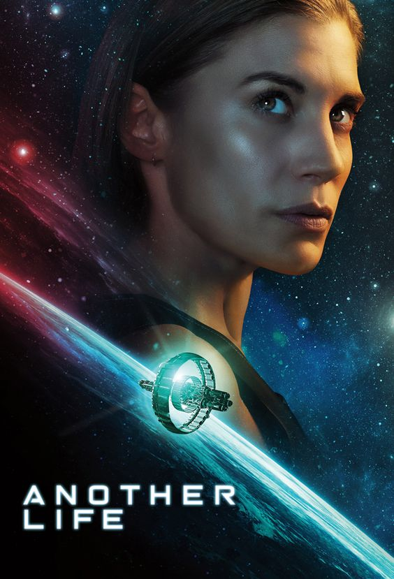
Um enorme artefato alienígena pousa na Terra, e Niko Breckinridge tem de liderar
uma missão interestelar para rastrear sua origem e fazer contato com os extraterrestres.
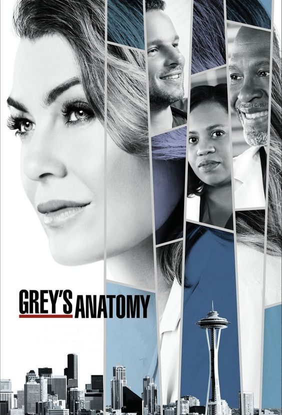
A série foca na vida de médicos cirurgiões internos, residentes e atendentes; e como eles evoluem na sua profissão ao tentar manter
a vida dos seus pacientes e nos seus relacionamentos pessoais. O título da série é uma brincadeira com Anatomia de Gray, um renomado livro de anatomia
humana escrito por Henry Gray.
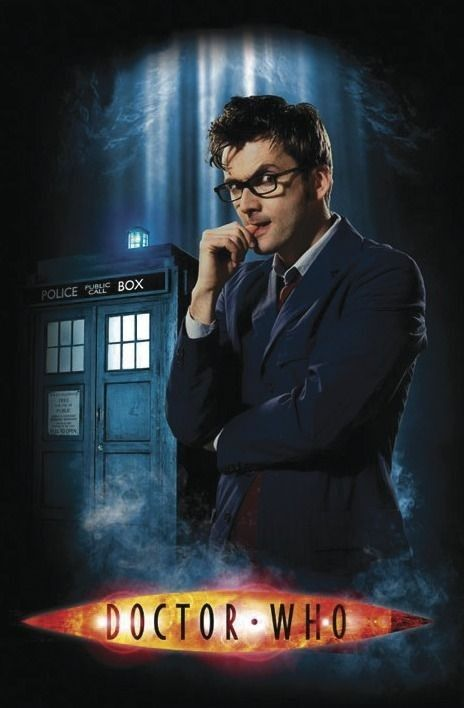
A série retrata as aventuras do Doutor, um Senhor do Tempo alienígena do planeta Gallifrey, que explora o universo em sua máquina do tempo,
uma sensível nave espacial conhecida como TARDIS (time and relative dimension in space), cuja aparência exterior se assemelha a uma cabine de polícia
londrina de 1963.
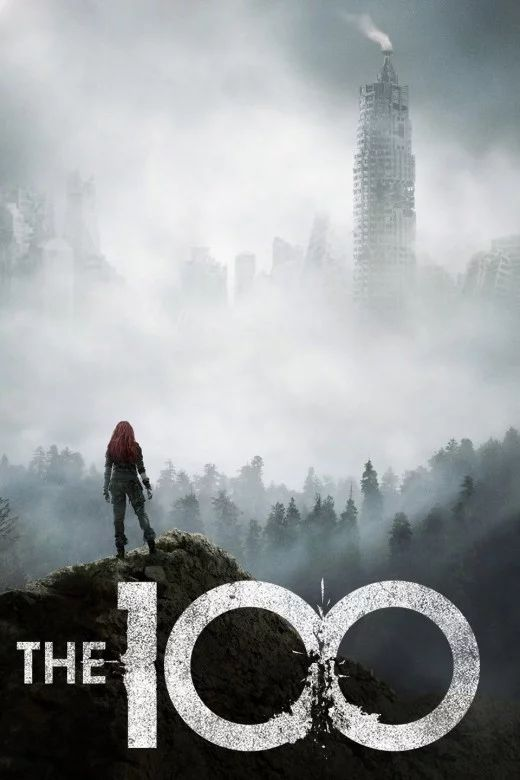
Quase 100 anos após um apocalipse nuclear devastar a Terra, 100 sobreviventes
de uma estação espacial voltam para avaliar as condições do planeta.
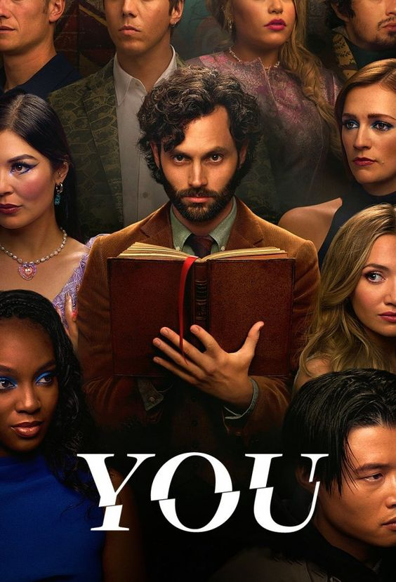
Obsessivo e perigosamente charmoso, ele vai ao extremo para entrar na vida de quem o fascina.
Você pode acabar fisgada sem nem perceber. Aí, pode ser tarde demais.
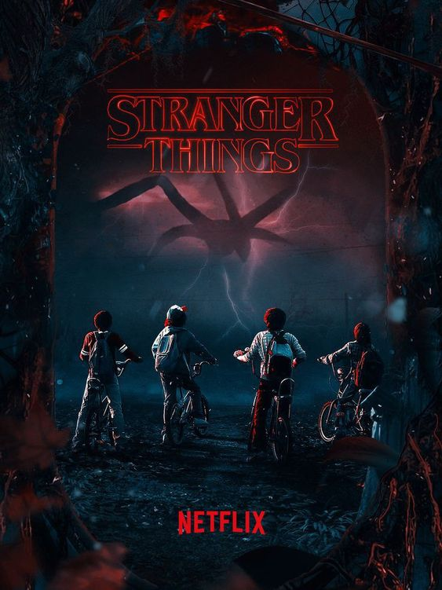
Quando um garoto desaparece, a cidade toda participa nas buscas. Mas o que encontram são segredos,
forças sobrenaturais e uma menina.
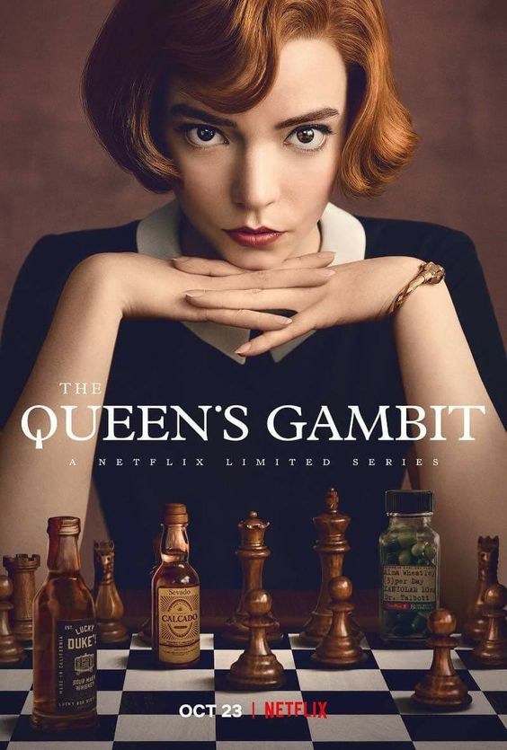
Em um orfanato nos anos 1950, uma garota-prodígio do xadrez luta contra o vício em uma
jornada improvável para se tornar a número 1 do mundo.
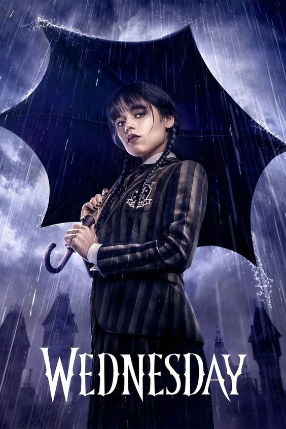
Inteligente, sarcástica e apática, Wandinha Addams pode estar meio morta por dentro,
mas na Escola Nunca Mais ela vai fazer amigos, inimigos e investigar assassinatos.
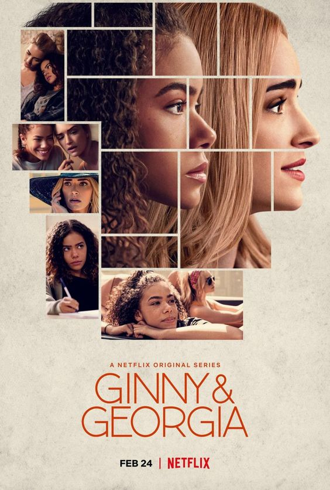
Em busca de uma nova chance, Georgia leva os filhos Ginny e Austin para morar em outra cidade.
Só que recomeçar do zero não é tão simples assim.
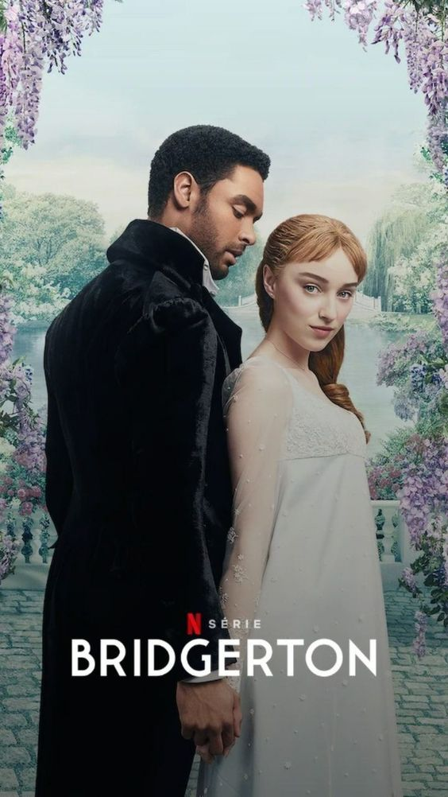
Oito irmãos inseparáveis buscam amor e felicidade na alta sociedade de Londres.
Inspirada nos best-sellers de Julia Quinn.
Em um mundo destruído pela guerra, a órfã Alina Starkov descobre que tem poderes
extraordinários e vira alvo de forças sombrias.
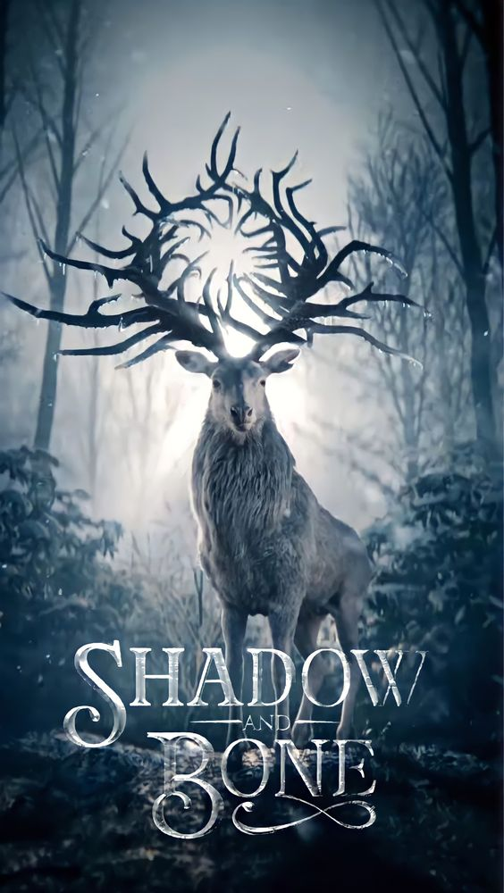
Em um mundo destruído pela guerra, a órfã Alina Starkov descobre que tem poderes
extraordinários e vira alvo de forças sombrias.